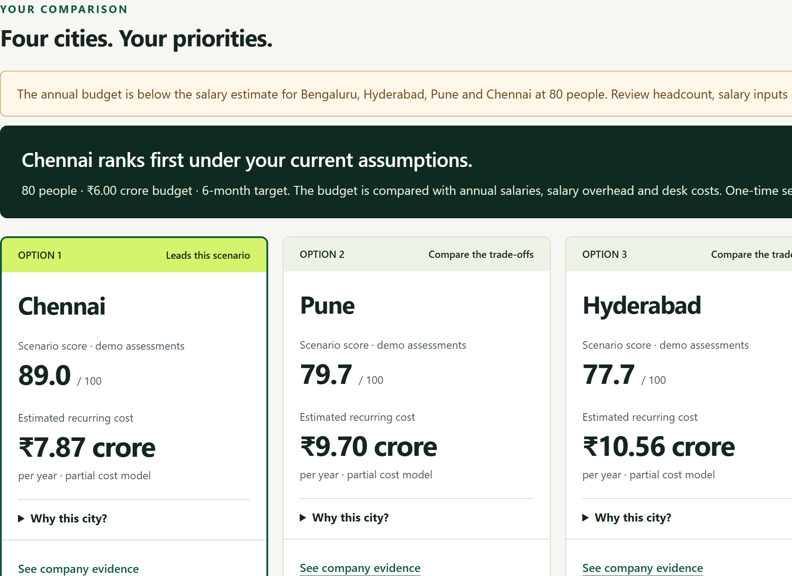
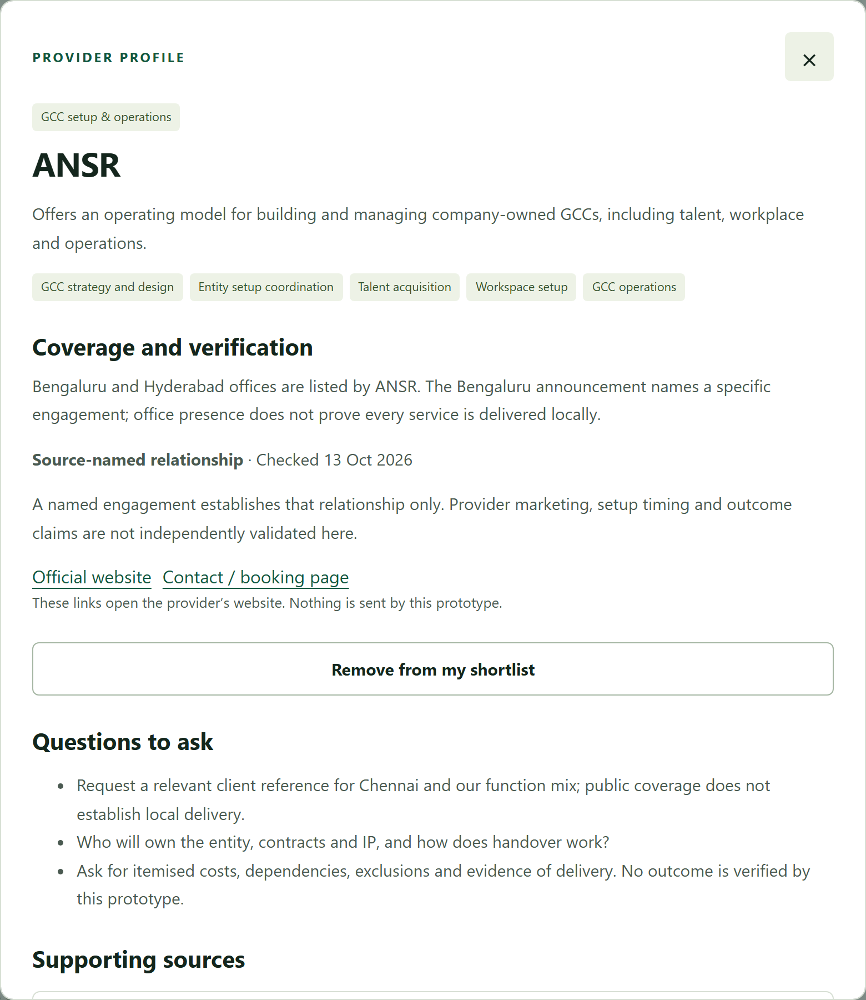
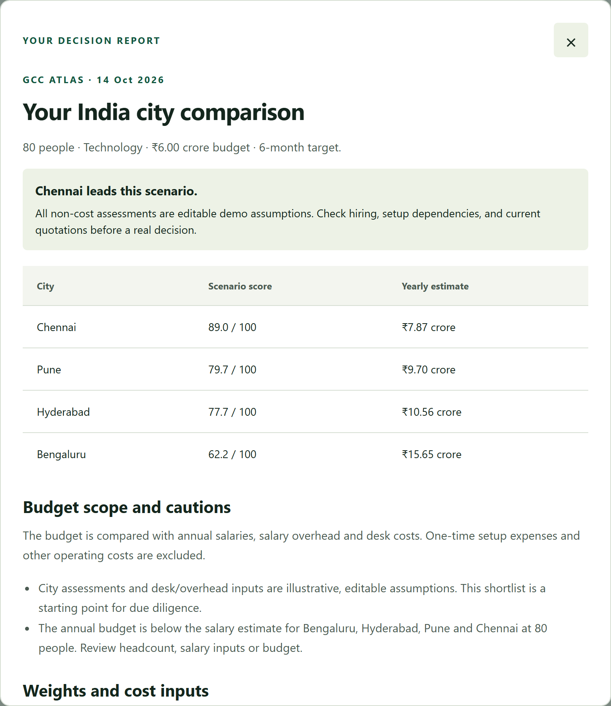

GCC Atlas
Atlas helps companies plan their first India team.
A global capability centre (GCC) is a company’s own team abroad.
Company’s needs
City and provider choices
A decision brief
Gagan Mahajan · Product Intern assignment, Flexiple · October 2026
The problem
Scattered information makes the first India plan hard to defend.
A company opening its own team in India must choose a city and firms to help. The evidence sits across reports, announcements and referrals, making options hard to compare and decisions hard to explain.
Reports
Company announcements
Provider websites
Referrals
The person responsible for the India plan
Which city?
Which firms?
On what evidence?
Source: Flexiple’s assignment brief, and a review of Flexiple’s public GCC pages on 13 Oct 2026.
2
Who is hurt
Unclear assumptions put budgets and hiring plans at risk.
Hypothesis to test
India lead
Must explain the shortlist to colleagues. The risk: rework before approval.
Hypothesis to test
Finance and hiring
Must challenge costs and staffing assumptions. The risk: uncertain budgets and staffing.
Provider estimate
4–6 months
Flexiple’s estimate for establishing a working entity. Not a delay caused by missing information.
Research effort and financial harm remain unmeasured.
Source: Flexiple GCC setup guide, flexiple.com/gcc/setup, read 13 Oct 2026. The two buyer risks are hypotheses to test.
3
Today’s options
Existing sources help, but buyers must connect the pieces.
| Starting point | What it provides | What the buyer still checks |
|---|---|---|
| Directories and reports | Companies and benchmarks | Relevance, dates and definitions |
| Referrals | Someone’s experience | Fit for this team |
| Advisers | Tailored advice | Assumptions and alternatives |
| Provider websites | Services and case studies | Role, results and suitability |
The proposed gap: a saved decision brief the buyer can check and revisit.
Sources: Flexiple GCC directory (flexiple.com/gcc/india) and setup services (flexiple.com/gcc), read 13 Oct 2026.
4
The hardest input
Provider evidence is the thinnest part of the brief.
What 43 announcements name
A state government
13 of 43
A setup partner
5 of 43
A building or landlord
5 of 43
Categories overlap. Selected public announcements, not a census.
In our selected sample, only 5 of 43 announcements name a setup partner. That gives a starting point for investigation; it does not prove who delivered well or who was never involved.
43 announcement records; 41 company names; 42 distinct source URLs.
Source: the announcements behind Flexiple’s new-centre list, flexiple.com/gcc/india. Snapshot 13 Oct 2026; counts confirmed in a 14 Oct reading of every article.
5
Priorities
The decision brief is the best starting point.
Prioritise immediate buyer usefulness, available evidence and build feasibility.
| Order | Opportunity | Why this order |
|---|---|---|
| 1 | City and provider decision brief | A complete buyer task using existing inputs |
| 2 | Better provider evidence | Strengthens the brief; needs source and client checks |
| 3 | New-centre and policy alerts | Useful later; needs reliable updating |
| 4 | Broader directories and benchmarks | Valuable foundation; public alternatives already exist |
Start with a complete decision; deepen its weakest evidence next. This ranking is a hypothesis to test with buyers.
Product judgement, informed by the assignment and Flexiple’s existing directory (flexiple.com/gcc/india).
6
Start with one buyer
The first user needs a shortlist colleagues can challenge.
A strategy or operations lead at a mid-sized global company, planning its first India team. Their job: bring city options, cost assumptions and potential providers into an internal approval discussion.
Trigger
Planning the first India team
User
Strategy or operations lead
Job
Prepare a shortlist for internal review
Initial customer hypothesis
Proposed starting segment; not an interviewed persona.
7
The product
Atlas turns research into a decision brief.
Team, budget and priorities
City scenarios
Provider shortlist
Saved decision brief
Choices + assumptions + sources + unanswered questions
Compare
Compare cities using the company’s needs and visible assumptions.
Shortlist
Shortlist providers alongside the evidence for their involvement.
Share
Save choices, sources and questions in a report colleagues can review.
Working planner: gaganm7.github.io/gcc-atlas-flexiple-assignment/dist/planner.html
8
What works today
The prototype completes a focused planning task.
Included
- Searchable source records
- Bengaluru, Hyderabad, Pune and Chennai scenarios
- Provider selection, saving and export
- Source links and labelled assumptions
Outside this prototype
- Complete national coverage
- Proven hiring or setup feasibility
- Shared accounts or booking services
- Verified provider performance
Saved plans reopen in the same browser; the downloaded brief is how a plan is shared.
Features as built in the submitted prototype.
9
Try the workflow · Illustrative scenario
A reviewer can follow the decision from start to finish.
1 · Compare

2 · Inspect and select

3 · Save and download

Working prototype: gaganm7.github.io/gcc-atlas-flexiple-assignment/dist/atlas.html · screenshots from the submitted build.
10
Facts and assumptions
Every claim carries its receipt.
Sourced claim
A named relationship and its supporting passage, with its link, date and checking status.
Assumption
An editable city assessment or cost input, always labelled as an assumption.
Open question
Evidence still needed before choosing a provider. A mention shows involvement, not quality.
Software salary references do not cover every function or seniority.
Salary references: Flexiple GCC statistics and methodology (flexiple.com/gcc/statistics, flexiple.com/market/methodology).
11
Why they would use it
Each stakeholder gets a clearer basis for the next conversation.
| Stakeholder | Uses today | Reason to try Atlas |
|---|---|---|
| Entering company: operations, finance, hiring | Reports, referrals, spreadsheets | One brief with choices and assumptions |
| Existing India teams and advisers | Separate project research | Reusable planning context |
| Setup, legal, tax, hiring, payroll and office firmsFuture contribution opportunity | Websites and referrals | Evidence attached to a relevant buyer need |
| State agenciesFuture contribution opportunity | Policy pages and outreach | Dated information in the buyer’s context |
Stakeholders from the assignment brief. Contribution workflows are proposals, not current features.
12
Why Flexiple would build this
Useful briefs could create better setup conversations for Flexiple.
Free research and planning
Buyer chooses an introduction
Paid setup or hiring engagement
- Free research helps buyers prepare their India plan.
- Optional introductions could lead to paid setup or hiring work.
- Test paid research later; never sell higher evidence rankings.
Later hypothesis
Paid research for complex decisions.
Proposed model; demand and pricing untested
Flexiple’s existing GCC services: flexiple.com/gcc.
13
Measure a useful decision
Success means buyers can explain and use their brief.
Usefulness
Briefs used in a real follow-up ÷ completed briefs
Does the brief support the next internal or adviser discussion?
Understanding
Users separating facts from assumptions ÷ users tested
Can the buyer explain the shortlist and its assumptions?
Trust
Unsupported claims found in review, with correction status
Track evidence errors before claiming time or cost savings.
Establish baselines before setting targets. No production analytics yet.
Proposed evaluation plan.
14
What we need to learn
Demand, evidence quality and trust still need testing.
Demand
Buyers may prefer an adviser to preparing a brief themselves.
Test: observe a real planning task.
Evidence
Public mentions may never give enough useful provider evidence.
Test: check source claims and seek client confirmation.
Trust
Illustrative rankings and commercial incentives could undermine trust.
Test: check that users understand assumptions; disclose commercial links.
Proposed tests, not research already completed
Limits recorded during the project’s review of Flexiple’s public pages and its own prototype.
15
Proposed next 90 days
Validate the decision task before expanding the product.
Days 1–30
Observe buyers and test the brief
Proceed if the task matters.
Days 31–60
Improve weak evidence and repeat the workflow
Proceed if buyers understand the evidence.
Days 61–90
Test introductions if buyers use the brief
Proceed if the brief supports real conversations.
Proposed sequence; dependent on findings
Author’s proposed plan. Day ranges are planning choices, not observed results.
16
GCC Atlas
Open the brief and challenge the reasoning.
Compare a scenario, inspect its evidence and download the brief.
City choices + provider evidence + visible assumptions
A decision brief
Gagan Mahajan · Product Intern assignment, Flexiple
17